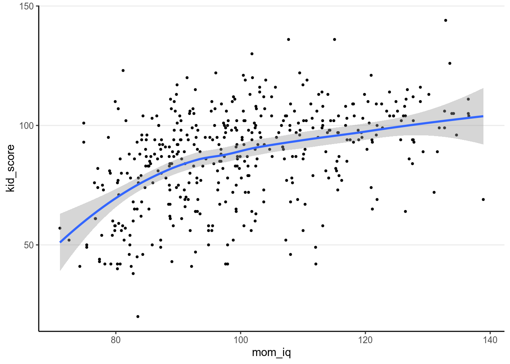
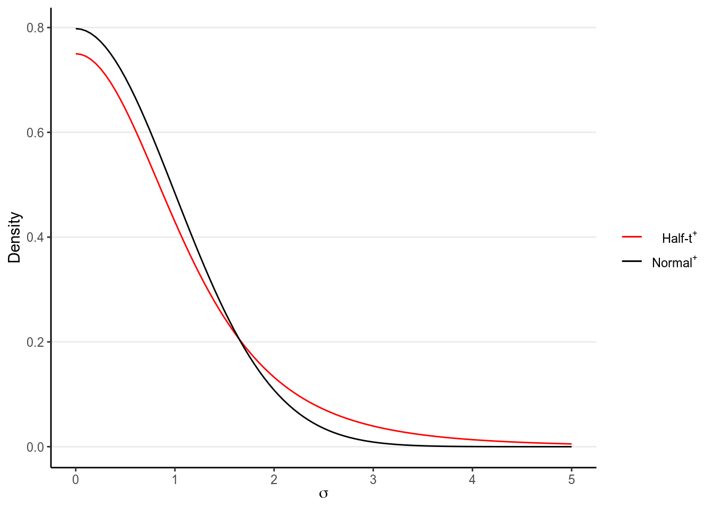
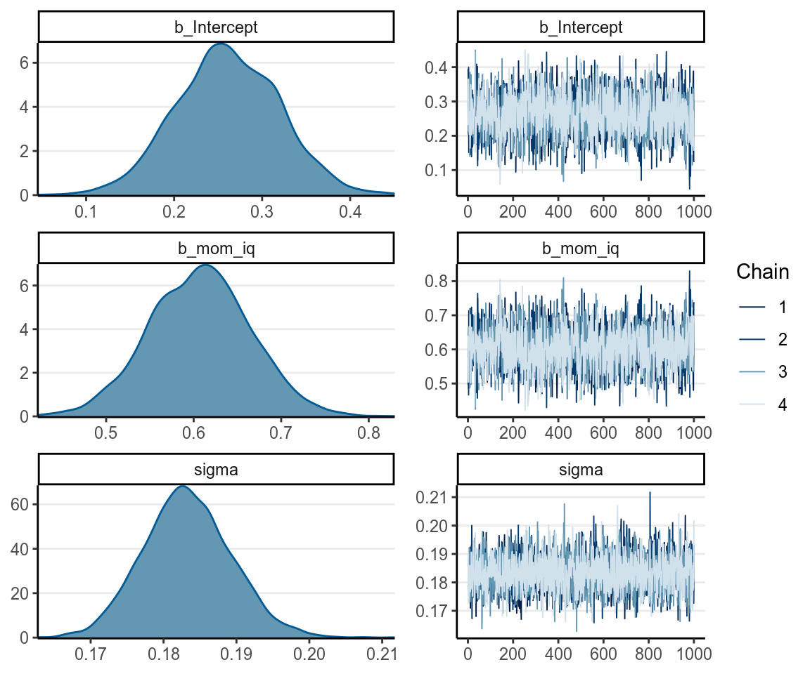
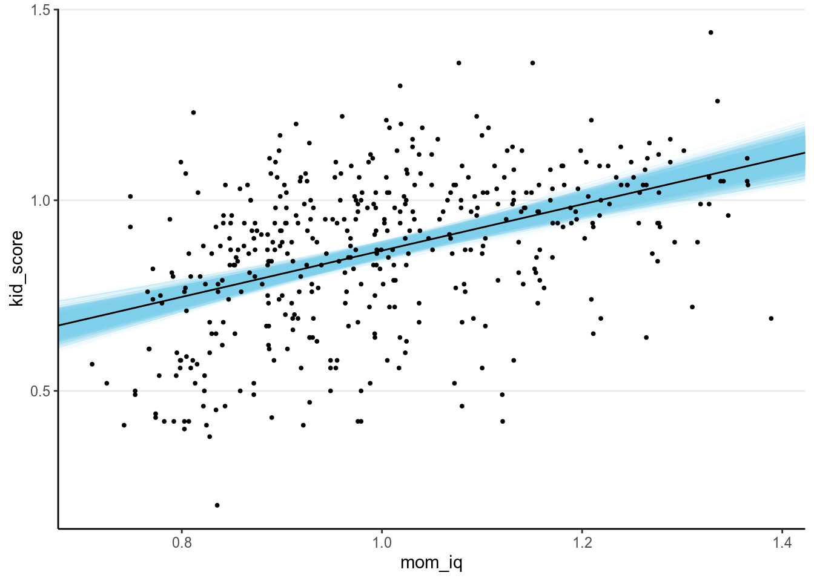
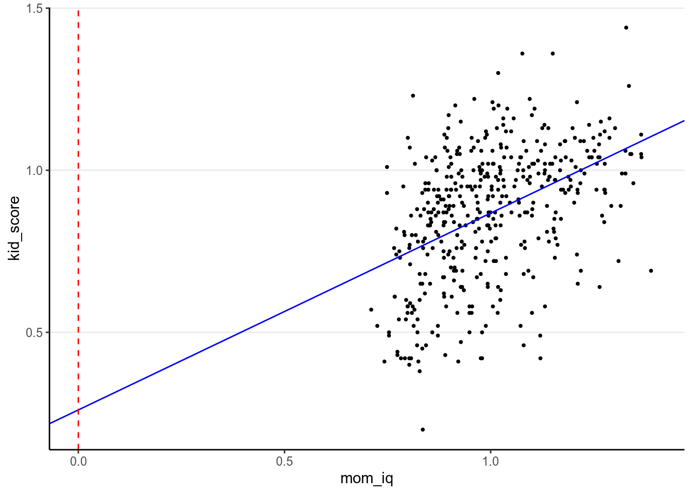
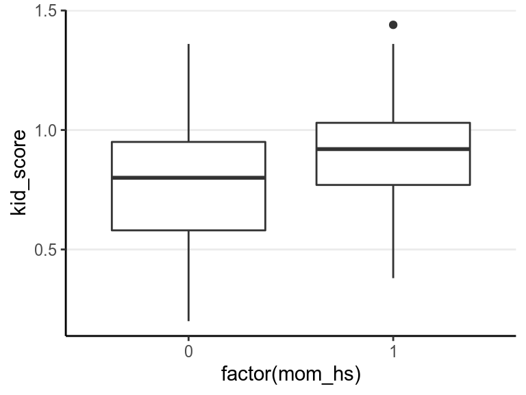

Chapter 7 Linear Models
7.1 What is Regression?
Regression is a class of statistical techniques to understand the relationship between an outcome variable (also called a criterion/response/dependent variable) and one or more predictor variables (also called explanatory/independent variables). For example, if we have the following scatter plot between two variables (\(Y\) and \(X\)):
We want to find some pattern from this relationship. In conventional regression, we model the conditional distribution of \(Y\) given \(X\), \(P(Y \mid X)\), by separating the outcome variable \(Y\) into (a) a systematic component that depends on the predictor, and (b) a random/probabilistic component that does not depend on the predictor. For example, we can start with a systematic component which only depends on the predictor value:
As you can see, all the red dots fall exactly on the curve in the graph above, meaning that as long as one knows the \(X\) value, one can predict the \(Y\) value with 100% accuracy. We can thus write \(Y^* = f(X)\) (where \(Y^*\) is the systematic component of \(Y\)).
However, in almost all scientific inquiries, one can never make prediction with 100% certainty (even in physics, which has measurement error and quantum mechanics). This can be due to the fact that we haven’t obtain all the factors that determine \(Y\), and there are things that are truly random (as in quantum physics). Therefore, we need to expand our model to incorporate this randomness, by adding a probabilistic component. Therefore, instead of saying the \(Y\) depends just on \(X\), we say that the value of \(Y\) is random, but the information about \(X\) provides information about how \(Y\) is distributed. This is achieved by studying the conditional distribution \(P(Y \mid X)\) such that the conditional expectation, \(\mathrm{E}(Y \mid X)\), is completely determined by \(X\), whereas on top of the conditional expectation, the observed \(Y\) value can be scattered around the conditional expectations, like the graph on the left below:
We can write the systematic part as: \[\mathrm{E}(Y \mid X) = f(X; \beta_1, \beta_2, \ldots), \] where \(\beta_1\), \(\beta_2\), \(\ldots\) are the parameters for some arbitrary function \(f(\cdot)\). The random part is about \(P(Y \mid X)\) which can take some arbitrary form of distributions. The problem is that in reality, even if such a model holds, we do not know what \(f(\cdot)\) and the true distribution of \(Y \mid X\) are, as we are only presented with data like those illustrated in the graph on the right above.
The regression model we will discuss here, which you have learned (or will learn) in introductory statistics, assumes that
- the function for the systematic component, \(f(\cdot)\), is a linear function (in the \(\beta\)s),
- \(Y \mid X\) is normally distributed, and
- \(Y_i\)’s are conditionally exchangeable given \(X\) with equal variance \(\sigma^2\).
Under these conditions, if we assume \(Y\) and \(X\) have a linear relationship that can be quantified by a straight line with an intercept \(\beta_0\) and a slope \(\beta_1\), we have a model \[Y_i \sim \mathcal{N}(\beta_0 + \beta_1 X_i, \sigma)\]
7.2 One Predictor
7.2.1 A continuous predictor
We will use a data set, kidiq, that is available in the rstanarm package.
You can import the data into R by (Internet connection needed):
Or from the file I uploaded
># vars n mean sd median trimmed mad min max range skew
># kid_score 1 434 86.80 20.41 90.0 87.93 19.27 20 144 124.0 -0.46
># mom_hs 2 434 0.79 0.41 1.0 0.86 0.00 0 1 1.0 -1.39
># mom_iq 3 434 100.00 15.00 97.9 99.11 15.89 71 139 67.9 0.47
># mom_work 4 434 2.90 1.18 3.0 2.99 1.48 1 4 3.0 -0.45
># mom_age 5 434 22.79 2.70 23.0 22.71 2.97 17 29 12.0 0.18
># kurtosis se
># kid_score -0.19 0.98
># mom_hs -0.07 0.02
># mom_iq -0.59 0.72
># mom_work -1.39 0.06
># mom_age -0.65 0.13Below is a description of the data
kidiq
Data from a survey of adult American women and their children (a subsample
from the National Longitudinal Survey of Youth).
Source: Gelman and Hill (2007)
434 obs. of 5 variables
kid_score Child's IQ score
mom_hs Indicator for whether the mother has a high school degree
mom_iq Mother's IQ score
mom_work 1 = did not work in first three years of child's life
2 = worked in 2nd or 3rd year of child's life
3 = worked part-time in first year of child's life
4 = worked full-time in first year of child's life
mom_age Mother's age7.2.1.1 Visualizing the data
Let’s first see a scatterplot matrix
We will first use mother’s score on an IQ test to predict the child’s test score, as shown in the following scatter plot
library(ggplot2)
# With ggplot2, first specify the `aesthetics`, i.e., what is the x variable
# and what is the y variable
ggplot(aes(x = mom_iq, y = kid_score), data = kidiq) +
geom_point(size = 0.7) + # add a layer with the points
geom_smooth() # add a smoother># `geom_smooth()` using method = 'loess' and formula 'y ~ x'
Here we use the ggplot2 package to plot the data. You have already used the
this package for some previous assignments and exercise, but here I’ll give you
a little bit more information. It is an extremely powerful graphical system
based on the grammar of graphics (gg), and is used a lot in for data analysts in
both academia and industry (if you want to learn more, check out this tutorial:
http://tutorials.iq.harvard.edu/R/Rgraphics/Rgraphics.html and this book:
https://ggplot2-book.org). The blue line above is obtained with smoothing,
which is a non-parametric way to estimate the true relationship between \(X\) and
\(Y\) and can be used to check whether a linear regression model is appropriate.
The grey region is the 95% CI for the smoother.
7.2.1.2 Choosing a model
We will use a linear regression model:
\[\texttt{kid_score}_i \sim \mathrm{N}(\mu_i, \sigma)\]
which, as you should recognize, is the normal model with conditional
exchangeability you’ve seen for group comparisons. However, this time \(\mu_i\)
is modelled as a function of a continuous variable, mom_iq, instead of a
binary grouping variable:
\[\mu_i = \beta_0 + \beta_1 \texttt{mom_iq}_i\]
In this model there are three parameters:
- \(\beta_0\): mean
kid_scorewhenmom_iq= 0; also called regression intercept. - \(\beta_1\): mean increase in
kid_scorefor every unit increase inmom_iq; also called regression slope or regression coefficient. - \(\sigma\): error standard deviation \(\sigma\); i.e., variability of
kid_scoreamong those with samemom_iqscore, and is assumed constant acrossmom_iqlevels.
You may not be aware when you first learned regression that \(\sigma\), sometimes also called residual standard error in least square estimation, is also a parameter; however, as long as it appears in the conditional distribution it needs to be estimated.
7.2.1.3 Choosing priors
In the general case, we need to specify a 3-dimensional joint prior distribution for the three parameters. However, a general practice is to assume prior independence among the parameters, which implies that prior to looking at the data, we have no knowledge whether the parameters are positively related or negatively related. With independence we are allowed to just specify three different priors for the three parameters.
In general, we want to be conservative by specifying some weakly informative
priors, so the variance of the priors should be large but not unrealistic. For
example, we don’t expect a one unit difference in mom_iq is associated with a
100 units difference in kid_iq. Also, to increase numerical stability, we will
rescale mom_iq and kid_iq by dividing them by 100, respectively:
kidiq100 <- kidiq %>%
mutate(mom_iq = mom_iq / 100, # divid mom_iq by 100
kid_score = kid_score / 100) # divide kid_score by 100We will be using the prior distributions:
\[\begin{align*} \beta_0 & \sim \mathcal{N}(0, 1) \\ \beta_1 & \sim \mathcal{N}(0, 1) \\ \sigma & \sim t^+(4, 0, 1) \end{align*}\]
which are similar to the ones in the group comparison example. The half-\(t\) distribution is recommended by Gelman (2006) and has the following shape:
># Warning: `mapping` is not used by stat_function()
># Warning: `mapping` is not used by stat_function()
As you can see, there is more density towards zero, but the tail is still quite heavy (as compared to a normal distribution), as you can see by comparing it to the tail of a half-normal distribution (which just means it starts from 0 instead of \(-\infty\)). This will avoid some extremely large values, but also not be overly restrictive in case \(\sigma\) is extremely large.
These priors can be set in brms. First check the default prior set up using
get_prior:
># prior class coef group resp dpar nlpar bound
># 1 b
># 2 b mom_iq
># 3 student_t(3, 0.9, 2.5) Intercept
># 4 student_t(3, 0, 2.5) sigma7.2.1.4 Obtaining the posteriors
7.2.1.4.1 Check convergence
The brm function by default used 4 chains, with 2,000 iterations for each
chain, and half of the iterations are used for warmup (so leaving 4,000 draws in
total for summarizing the posterior). If you run summary(m1) (in the next
subsection), you will get a summary of the posterior distributions for each
parameter, and in this example all Rhat is 1.00, so it appears that the chains
have converged.
You can see more with a graphical interface:
7.2.1.4.2 Summarizing the posterior
If you use the summary function on the model you will see a concise output
with the estimate and the posterior SD.
># Family: gaussian
># Links: mu = identity; sigma = identity
># Formula: kid_score ~ mom_iq
># Data: kidiq100 (Number of observations: 434)
># Samples: 4 chains, each with iter = 2000; warmup = 1000; thin = 1;
># total post-warmup samples = 4000
>#
># Population-Level Effects:
># Estimate Est.Error l-95% CI u-95% CI Rhat Bulk_ESS Tail_ESS
># Intercept 0.26 0.06 0.15 0.38 1.00 3331 2414
># mom_iq 0.61 0.06 0.49 0.72 1.00 3248 2385
>#
># Family Specific Parameters:
># Estimate Est.Error l-95% CI u-95% CI Rhat Bulk_ESS Tail_ESS
># sigma 0.18 0.01 0.17 0.20 1.00 4069 2777
>#
># Samples were drawn using sampling(NUTS). For each parameter, Bulk_ESS
># and Tail_ESS are effective sample size measures, and Rhat is the potential
># scale reduction factor on split chains (at convergence, Rhat = 1).And here is the HPDI with the broom package and the tidy() function:
># term estimate std.error lower upper
># 1 b_Intercept 0.261 0.05862 0.165 0.358
># 2 b_mom_iq 0.607 0.05789 0.511 0.702
># 3 sigma 0.183 0.00604 0.174 0.193
># 4 lp__ 117.176 1.18197 114.843 118.463You can plot the density and mixing of the posterior distributions:

7.2.1.5 Posterior Predictive Check
Now, we want to draw some new data based on the posterior distributions.
This can be done with pp_check
Looks like there is some skewness not captured in the model. We will talk more about diagnostics for regression models next week.
7.2.1.6 Visualizing and interpreting
Using the posterior mean, we have the following regression line
\[\widehat{\texttt{kid_score}} = 0.261 + 0.607 \times \texttt{mom_iq}\]
So, based on our model, if we observe two participants with 1 unit difference in
mom_iq, the child’s IQ score is expected to be different by
0.607 points, 95% CI [0.494, 0.720]. As mom_iq and kid_score are on similar scale,
there seems to be strong heritability for IQ.
However, in Bayesian statistics, we want to be explicit about the uncertainty in the parameter estimate, as the posterior mean/median is just one of the infinitely many possible values in the posterior distribution. We can visualize with the following code:
draws_m1 <- as.data.frame(m1) # Store the posterior draws as a data frame
# change the names for the first 2 columns just for convenience
colnames(draws_m1)[1:2] <- c("a", "b")
ggplot(aes(x = mom_iq, y = kid_score), data = kidiq100) +
# Add transparent regression lines using different posterior draws
geom_abline(data = draws_m1, aes(intercept = a, slope = b),
color = "skyblue", size = 0.2, alpha = 0.10) +
geom_point(size = 0.7) + # add a layer with the points
# Add the predicted line with the posterior means on top
geom_abline(intercept = fixef(m1)[1, "Estimate"],
slope = fixef(m1)[2, "Estimate"]) 
Or with brms, we can use the handy marginal_effects() function:
># Warning: Method 'marginal_effects' is deprecated. Please use
># 'conditional_effects' instead.7.2.1.6.1 Predictive intervals
In addition, one can construct a predictive interval for each level of
mom_iq. A 90% predictive interval is one such that a new observation
generated from our model will have a 90% chance of falling in that interval.
This is an interval about the probability of new data, \(\tilde y\), which is
different from a credible interval as the latter is about the probability of
the parameter.
# Need to load the mmp_brm.R script
mmp_brm(m1, x = "mom_iq", prob = 0.90,
plot_pi = TRUE) # the predictive interval will be shown in green># `geom_smooth()` using method = 'loess' and formula 'y ~ x'
># `geom_smooth()` using method = 'loess' and formula 'y ~ x'
># `geom_smooth()` using method = 'loess' and formula 'y ~ x'
># `geom_smooth()` using method = 'loess' and formula 'y ~ x'7.2.1.6.2 \(R^2\) effect size
We can also compute an \(R^2\) as an effect size for the results. \(R^2\) is the proportion of variance of the outcome variable predicted by the predictor, or \[R^2 = \frac{\mathrm{Var}(\beta_0 + \beta_1 X)}{\mathrm{Var}(\beta_0 + \beta_1 X) + \sigma^2} = \frac{\beta_1^2 \mathrm{Var}(X)}{\beta_1^2 \mathrm{Var}(X) + \sigma^2} = 1 - \frac{\sigma^2}{\beta_1^2 \mathrm{Var}(X) + \sigma^2}\]
Without going too much into the detail, you can get:
># Estimate Est.Error Q2.5 Q97.5
># R2 0.199 0.0302 0.14 0.258This is interpreted as:
Based on the model, 19.942% of the variance of kid’s score can be predicted by mother’s IQ, 95% CI [ 14.025%, 25.8%].
Note that \(R^2\) is commonly referred to variance explained, but as “explained” usually implies causation this only makes sense when causal inference is the goal.
7.2.2 Centering
In the previous model, the intercept is the estimated mean kid_score when
mom_iq is zero. As illustrated in the graph below, this value is not very
meaningful, as mom_iq = 0 is far from the main bulk of data:

And many scholar caution against extrapolation in regression. Therefore, for interpretation purpose one should consider center the predictors so that the zero point is meaningful.
One can center the predictors to a meaningful value in the data.
For mom_iq, usually the
population mean for IQ is 100, so we can center the predictor to 1 by
subtracting 1 from it:
m1c <- brm(kid_score ~ mom_iq_c, data = kidiq100,
prior = c(prior(normal(0, 1), class = "Intercept"),
prior(normal(0, 1), class = "b", coef = "mom_iq_c"),
prior(student_t(4, 0, 1), class = "sigma")),
seed = 2302
)># term estimate std.error lower upper
># 1 b_Intercept 0.868 0.00871 0.853 0.882
># 2 b_mom_iq_c 0.607 0.05865 0.512 0.702
># 3 sigma 0.183 0.00638 0.173 0.194
># 4 lp__ 117.109 1.24779 114.517 118.465Now, we can interpret the intercept as the predicted average kid_score when
mom_iq = 100 (or 1 in the rescaled version) for participants whose mother does not have a high school
degree, which is 86.771 points, 95% CI [85.059, 88.541].
Centering is especially important when evaluating interaction models.
7.2.3 A categorical predictor
We can repeat the analysis using a categorical predictor, mom_hs, indicating
whether the mother has a high school degree (1 = yes, 0 = no). We can visualize
the data:
ggplot(aes(x = factor(mom_hs), y = kid_score), data = kidiq100) +
geom_boxplot() # add a layer with a boxplot
Our regression model is
\[\begin{align} \texttt{kid_score}_i & \sim \mathcal{N}(\mu_i), \sigma) \\ \mu_i & = \beta_1 \texttt{mom_hs}_i \end{align}\]
where \(\beta_0\) is the expected kid_score when the mother did not have
a high school degree, and \(\beta_1\) is the expected difference between those
whose mothers have a high school degree and those without.
We will choose the following priors:
\[\begin{align*} \beta_0 & \sim \mathcal{N}(0, 1) \\ \beta_1 & \sim \mathcal{N}(0, 1) \\ \sigma & \sim t^+(4, 0, 1) \end{align*}\]
It is safe to say that whether mother has a high school degree would not lead to a difference of 100 points in IQ.
# First recode `mom_hs` to be a factor (not necessary but useful for plot)
kidiq100 <- kidiq100 %>%
mutate(mom_hs = factor(mom_hs, labels = c("no", "yes")))m2 <- brm(kid_score ~ mom_hs, data = kidiq100,
prior = c(prior(normal(0, 1), class = "Intercept"),
# set for all "b" coefficients
prior(normal(0, 1), class = "b"),
prior(student_t(4, 0, 1), class = "sigma")),
seed = 2302
)You can use the summary function, or the tidy() function in the broom
package:
># term estimate std.error lower upper
># 1 b_Intercept 0.775 0.02027 0.7424 0.808
># 2 b_mom_hsyes 0.118 0.02320 0.0805 0.156
># 3 sigma 0.199 0.00678 0.1886 0.211
># 4 lp__ 81.244 1.24461 78.8563 82.565The chains have converged. Using the posterior medians, the estimated child’s
IQ score is 77.506 points, 95% CI [73.464, 81.449] for the group whose
mother does not have a high school degree, and the estimated average difference
between the group whose mother has a high school degree and those who does not
on kid_score is 11.800 points, 95% CI [7.200, 16.306]. We can also obtain
the posterior distribution for the mean of the mom_hs = 1 group by adding
up the posterior draws of \(\beta_0\) and \(\beta_1\):
draws_m2 <- as_tibble(m2) # Store the posterior draws as a data frame
# Add up the two columns to get the predicted mean for `mom_hs = 1`
yhat_hs <- draws_m2$b_Intercept + draws_m2$b_mom_hsyes
psych::describe(yhat_hs)># vars n mean sd median trimmed mad min max range skew kurtosis se
># X1 1 4000 0.89 0.01 0.89 0.89 0.01 0.85 0.94 0.08 0.03 0.15 0You can also use marginal_effects():
># Warning: Method 'marginal_effects' is deprecated. Please use
># 'conditional_effects' instead.This is an example of the beauty of Bayesian and the MCMC method. In frequentist, although it’s easy to get \(\hat{\beta_0} + \hat{\beta_1}\), it is hard to get the corresponding \(\mathit{SE}\), whereas with MCMC, one just needs to do the addition in each iteration, and in the end all those values will form the posterior samples of \(\beta_0 + \beta_1\).
7.2.4 Predictors with multiple categories
In Bayesian, using predictors with multiple categories is just the same as in
frequentist. In R this can be handled automatically. For example, if I recode
mom_iq into three categories:
kidiq_cat <- kidiq100 %>%
mutate(mom_iq_cat =
findInterval(mom_iq, c(.7, .85, 1, 1.15)) %>%
factor(labels = c("low", "below average",
"above average", "high")))I can put the categorical predictor into the model with brm()
m1_cat <- brm(kid_score ~ mom_iq_cat, data = kidiq_cat,
prior = c(prior(normal(0, 1), class = "Intercept"),
# set for all "b" coefficients
prior(normal(0, 1), class = "b"),
prior(student_t(4, 0, 1), class = "sigma")),
seed = 2302
)And R by default will choose the first category as the reference group. See the results below.
># Warning: Method 'marginal_effects' is deprecated. Please use
># 'conditional_effects' instead.7.2.5 STAN
It’s also easy to implement it in STAN
data {
int<lower=0> N; // number of observations
vector[N] y; // response variable;
int<lower=0> p; // number of predictor variables (exclude intercept)
matrix[N, p] X; // predictor variable;matrix
}
parameters {
real beta_0; // intercept
vector[p] beta; // slopes
real<lower=0> sigma; // error standard deviation
}
model {
// `normal_id_glm` is specially designed for regression
y ~ normal_id_glm(X, beta_0, beta, sigma);
// prior
beta_0 ~ normal(0, 1);
beta ~ normal(0, 1);
sigma ~ student_t(4, 0, 1);
}
generated quantities {
real yrep[N]; // simulated data based on model
vector[N] yhat = beta_0 + X * beta; // used to compute R-squared effect size
for (i in 1:N) {
yrep[i] = normal_rng(yhat[i], sigma);
}
}m1_stan <- stan("../codes/normal_regression.stan",
data = list(N = nrow(kidiq100),
y = kidiq100$kid_score,
p = 1,
X = as.matrix(kidiq100$mom_iq_c)),
seed = 1234)And the \(R^2\) can be obtained as
># vars n mean sd median trimmed mad min max range skew kurtosis se
># X1 1 4000 0.2 0.03 0.2 0.2 0.03 0.1 0.3 0.2 0.04 -0.09 07.3 Multiple Regression
7.3.1 Two Predictor Example
Now let’s put both predictors to the model, as in multiple regression. \[\begin{align} \texttt{kid_score}_i & \sim \mathcal{N}(\mu_i, \sigma) \\ \mu_i & = \beta_0 + \beta_1 (\texttt{mom_iq_c}_i) + \beta_2 (\texttt{mom_hs}_i) \end{align}\] Remember that the coefficients are are slopes when all other predictors are constant.
We will choose the following priors, same as the previous models:
\[\begin{align*} \beta_0 & \sim \mathcal{N}(0, 1) \\ \beta_1 & \sim \mathcal{N}(0, 1) \\ \beta_2 & \sim \mathcal{N}(0, 1) \\ \sigma & \sim t^+(4, 0, 1) \end{align*}\]
m3 <- brm(kid_score ~ mom_iq_c + mom_hs, data = kidiq100,
prior = c(prior(normal(0, 1), class = "Intercept"),
# set for all "b" coefficients
prior(normal(0, 1), class = "b"),
prior(student_t(4, 0, 1), class = "sigma")),
seed = 2302
)The chains have converged. We have the following results (with mcmc_areas)
># Warning: Method 'stanplot' is deprecated. Please use 'mcmc_plot' instead.We can plot the data with two regression lines
(left for mom_hs = “no” and right for mom_hs = "yes):
plot(
marginal_effects(m3, effects = "mom_iq_c",
# Request two lines using `conditions`
conditions = tibble(mom_hs = c("no", "yes"))),
points = TRUE, point_args = list(size = 0.5)
)># Warning: Method 'marginal_effects' is deprecated. Please use
># 'conditional_effects' instead.Using the posterior mean, we have the following regression line
\[\widehat{\texttt{kid_score}} = 0.821 +
0.562 \times \texttt{mom_iq_c} +
0.06 \times \texttt{mom_hs}\]
So, based on our model, if we observe two participants with 1 unit difference in
mom_iq_c, and for both the mothers have high school degree (or both without),
the child’s IQ score is expected to be different by 0.562 points, 95% CI [0.442, 0.679]. On the
other hand, for two observations with the same mom_iq_c, our model predicted
that the child’s IQ score when the mother has high school degree is higher by
5.999 points, 95% CI [1.723, 10.226] on average.
7.3.2 Interactions
The previous model assumes that the average difference in kid_score for
participants that are 1 unit different in mom_iq_c is constant for the mom_hs = 1 group and the mom_hs = 0 group, as indicated by the same slope of the two
regression lines associated with mom_iq_c. However, this assumption can be
relaxed by including an interaction term:
\[\begin{align}
\texttt{kid_score}_i & \sim \mathcal{N}(\mu_i), \sigma) \\
\mu_i & = \beta_0 + \beta_1 (\texttt{mom_iq_c}_i) +
\beta_2 (\texttt{mom_hs}_i) +
\beta_3 (\texttt{mom_iq_c}_i \times
\texttt{mom_hs}_i) \\
\beta_0 & \sim \mathcal{N}(0, 1) \\
\beta_1 & \sim \mathcal{N}(0, 1) \\
\beta_2 & \sim \mathcal{N}(0, 1) \\
\beta_3 & \sim \mathcal{N}(0, 0.5) \\
\sigma & \sim t^+(4, 0, 1)
\end{align}\]
Note that the prior scale is smaller for \(\beta_3\). This is chosen because
generally the magnitude of an interaction effect is smaller than the main
effect.
m4 <- brm(kid_score ~ mom_iq_c * mom_hs, data = kidiq100,
prior = c(prior(normal(0, 1), class = "Intercept"),
# set for all "b" coefficients
prior(normal(0, 1), class = "b"),
# for interaction
prior(normal(0, 0.5), class = "b",
coef = "mom_iq_c:mom_hsyes"),
prior(student_t(4, 0, 1), class = "sigma")),
seed = 2302
)~ mom_iq_c * mom_hs means including the interaction effect as well as the
individual main effects. The chains have converged. We have the following
results
># Family: gaussian
># Links: mu = identity; sigma = identity
># Formula: kid_score ~ mom_iq_c * mom_hs
># Data: kidiq100 (Number of observations: 434)
># Samples: 4 chains, each with iter = 2000; warmup = 1000; thin = 1;
># total post-warmup samples = 4000
>#
># Population-Level Effects:
># Estimate Est.Error l-95% CI u-95% CI Rhat Bulk_ESS Tail_ESS
># Intercept 0.85 0.02 0.80 0.89 1.00 2643 2505
># mom_iq_c 0.91 0.14 0.63 1.19 1.00 2103 2092
># mom_hsyes 0.03 0.02 -0.01 0.08 1.00 2822 2754
># mom_iq_c:mom_hsyes -0.42 0.16 -0.73 -0.11 1.00 2114 2057
>#
># Family Specific Parameters:
># Estimate Est.Error l-95% CI u-95% CI Rhat Bulk_ESS Tail_ESS
># sigma 0.18 0.01 0.17 0.19 1.00 3249 2175
>#
># Samples were drawn using sampling(NUTS). For each parameter, Bulk_ESS
># and Tail_ESS are effective sample size measures, and Rhat is the potential
># scale reduction factor on split chains (at convergence, Rhat = 1).Using the posterior median, we have the following regression line \[\widehat{\texttt{kid_score}} = 0.849 + 0.911 \times \texttt{mom_iq_c} + 0.033 \times \texttt{mom_hs} + -0.419 \times \texttt{mom_iq_c} \times \texttt{mom_hs}\]
Interaction effect is generally not easy to interpret. It would be easier to
write the regression line for mom_hs = “no” (0) and mom_hs = “yes” (1). To
do this, note that the regression line for mom_hs = “yes” is
\[\begin{align*} \mathrm{E}(\texttt{kid_score} \mid \texttt{mom_iq_c}, \texttt{mom_hs} = 1) = (\beta_0 + \beta_2) + (\beta_1 + \beta_3)(\texttt{mom_iq_c}) = \beta_0^* + \beta_1^*(\texttt{mom_iq_c}) \end{align*}\]
Note that the posterior mean of \(\beta_0^*\) is equal to the sum of the posterior means of \(\beta_0\) and \(\beta_2\) (and same for \(\beta_1^*\)). (However, the posterior medians may be different, because the median is not a linear function of the posterior samples)
When mom_hs = 0,
\[\widehat{\texttt{kid_score}} = 0.849 +
0.911 \times \texttt{mom_iq_c}\]
and when mom_hs = 1
\[\widehat{\texttt{kid_score}} = 0.882 +
0.492 \times
\texttt{mom_iq_c}\]
We can plot the data with two regression lines with the following code:
plot(
marginal_effects(m4, effects = "mom_iq_c",
# Request two lines using `conditions`
conditions = tibble(mom_hs = c("no", "yes"))),
points = TRUE, point_args = list(size = 0.5)
)># Warning: Method 'marginal_effects' is deprecated. Please use
># 'conditional_effects' instead.We can get an \(R^2\) effect size.
># Estimate Est.Error Q2.5 Q97.5
># R2 0.227 0.0312 0.163 0.288So the two predictors, plus the main effect, explained
22.719%
of the variance of kid_score. However, comparing to the model with only
mom_iq_c as predictor, including mom_hs and the interaction increased
the \(R^2\) by \(2.777\%\).
You can plot the density of the posterior distributions for the three \(\beta\)s:
# `pars = "b"` will include all regression coefficients
stanplot(m4, type = "areas", pars = "b", prob = 0.90)># Warning: Method 'stanplot' is deprecated. Please use 'mcmc_plot' instead.And below I plot the 90% predictive intervals and the variations of the
regression lines, separated by the status of mom_hs. The R code is a bit
cumbersome though.
# Obtain the predictive intervals
pi_m4 <- predictive_interval(m4, prob = 0.9)
colnames(pi_m4) <- c("lwr", "upr") # change the names for convenience
# Combine the PIs with the original data
df_plot <- cbind(kidiq100, pi_m4)
# Create a data frame for the regression lines
draws_m4 <- as.matrix(m4)
df_lines <- rbind(data.frame(mom_hs = "no", a = draws_m4[ , 1],
b = draws_m4[ , 2]),
data.frame(mom_hs = "yes", a = draws_m4[ , 1] + draws_m4[ , 3],
b = draws_m4[ , 2] + draws_m4[ , 4]))
df_mean_line <- data.frame(mom_hs = c("no", "yes"),
a = c(fixef(m4)[1, "Estimate"],
sum(fixef(m4)[c(1, 3), "Estimate"])),
b = c(fixef(m4)[2, "Estimate"],
sum(fixef(m4)[c(2, 4), "Estimate"])))
ggplot(aes(x = mom_iq_c, y = kid_score), data = df_plot) +
facet_wrap( ~ mom_hs) +
# Add a layer of predictive intervals
geom_ribbon(aes(ymin = lwr, ymax = upr),
fill = "grey", alpha = 0.5) +
geom_abline(data = df_lines, aes(intercept = a, slope = b),
color = "skyblue", size = 0.2, alpha = 0.10) +
geom_point(size = 0.7, aes(col = factor(mom_hs))) +
geom_abline(data = df_mean_line, aes(intercept = a, slope = b))And you can see the uncertainty is larger for mom_hs = 0. This makes sense
because there are less participants in this group.
7.4 Tabulating the Models
There is a handy function in the sjPlot package, tab_model(), which can
show a neat summary of the various models:
| kid.score | kid.score | kid.score | kid.score | |||||
|---|---|---|---|---|---|---|---|---|
| Predictors | Estimates | CI (95%) | Estimates | CI (95%) | Estimates | CI (95%) | Estimates | CI (95%) |
| Intercept | 0.87 | 0.85 – 0.89 | 0.78 | 0.73 – 0.81 | 0.82 | 0.78 – 0.86 | 0.85 | 0.80 – 0.89 |
| mom.iq | 0.61 | 0.49 – 0.72 | 0.56 | 0.44 – 0.68 | 0.91 | 0.63 – 1.19 | ||
| mom_hs: yes | 0.12 | 0.07 – 0.16 | 0.06 | 0.02 – 0.10 | 0.03 | -0.01 – 0.08 | ||
| mom_iq_c.mom_hsyes | -0.42 | -0.73 – -0.11 | ||||||
| Observations | 434 | 434 | 434 | 434 | ||||
| R2 Bayes | 0.200 | 0.056 | 0.214 | 0.228 | ||||
However right now it only supports HTML. You can also use the following code:
>#
># ============================================================================
># Model 1 Model 2 Model 3 Model 4
># ----------------------------------------------------------------------------
># Intercept 0.87 * 0.78 * 0.82 * 0.85 *
># [0.85; 0.88] [0.73; 0.81] [0.78; 0.86] [ 0.80; 0.89]
># mom_iq_c 0.61 * 0.56 * 0.91 *
># [0.49; 0.72] [0.45; 0.68] [ 0.64; 1.20]
># mom_hsyes 0.12 * 0.06 * 0.03
># [0.08; 0.17] [0.02; 0.10] [-0.01; 0.08]
># mom_iq_c:mom_hsyes -0.42 *
># [-0.75; -0.13]
># ----------------------------------------------------------------------------
># R^2 0.20 0.06 0.21 0.23
># Num. obs. 434 434 434 434
># loo IC -240.07 -167.76 -245.19 -252.03
># WAIC -240.08 -167.77 -245.20 -252.05
># ============================================================================
># * Null hypothesis value outside the confidence interval.Replacing texreg::screenreg() by texreg::texreg() will generate table for
PDF output.
We will talk about model checking, robust models, and other extensions to the normal regression model next week.
References
Gelman, Andrew. 2006. “Prior distributions for variance parameters in hierarchical models (Comment on Article by Browne and Draper).” Bayesian Analysis 1 (3): 515–34. https://doi.org/10.1214/06-BA117A.